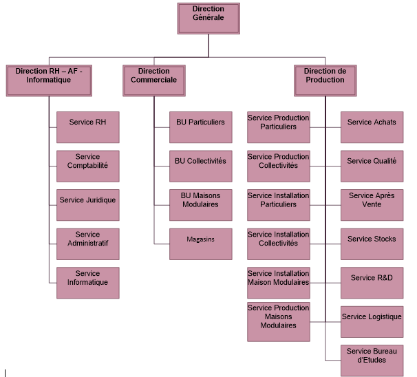

Le Groupe Madera a été créé en 1990, il est spécialisé dans la production de constructions en bois pour les particuliers (chalets, terrasses, extensions de maison …) et pour les collectivités (abris de bus, mobiliers urbains, aires de jeux…). Plus récemment, l’entreprise a développé son activité en s’orientant sur les constructions de maisons modulaires et écologiques en bois.
Implantation de l'entreprise :